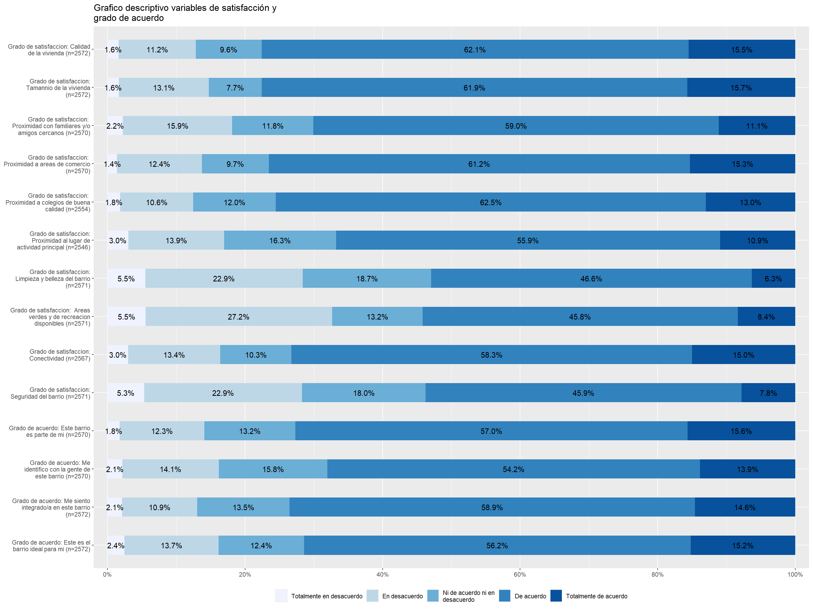
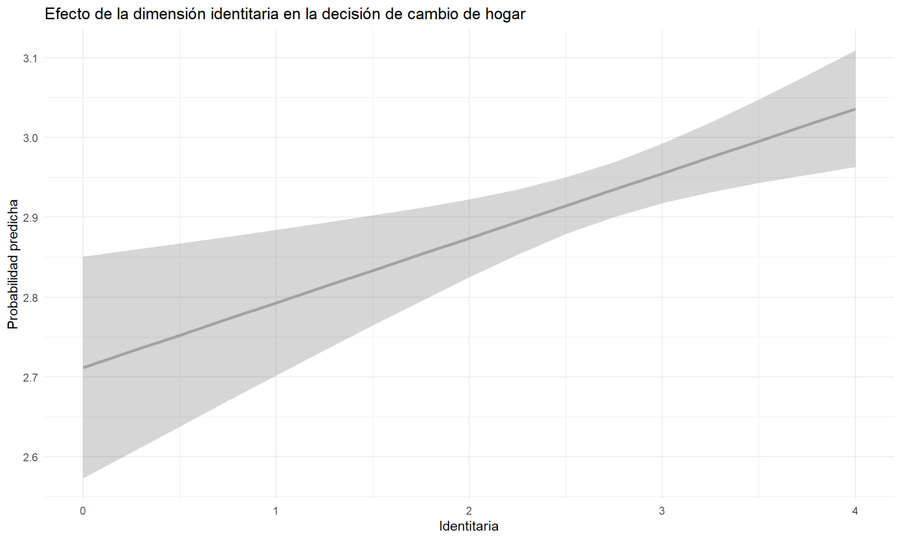
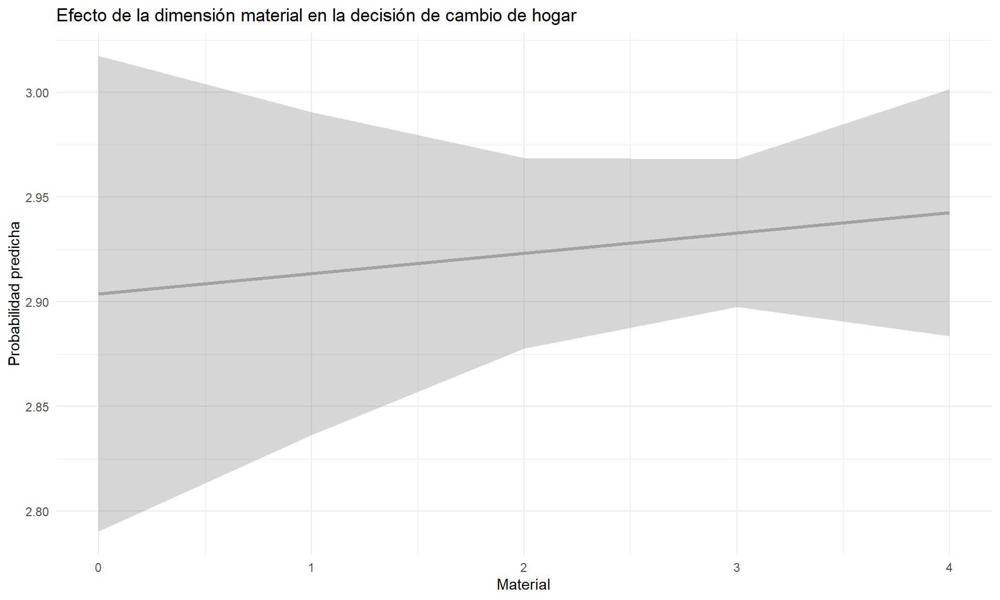

Influencia de los determinantes de la Satisfacción residencial en la decisión del cambio de hogar
El objetivo de nuestra investigación consiste en:
Determinar que dimensión de la satisfacción residencial es la que influye en la decisión del cambiarse de hogar
A su vez nuestra hipotesis de investigación seria la siguiente:
A medida que disminuya la satisfacción residencial en sus diversas dimensiones, NO aumentaria la probabilidad de que el encuestado decida cambiarse de hogar.
Base de datos Utilizada
Para realizar este trabajo optamos por utilizar la base de datos ELSOC (Estudio Longitudinal Social de Chile) de el COES (Centro de Estudios de conflicto y Cohesión Social). Encuesta de tipo longitudinal realizada durante los años 2016 - 2022 Para este trabajo utilizamos específicamente los datos pertenecientes al año 2022.
Que entendemos por satisfacción residencial:
Entendemos por satisfacción residencial como aquel componente clave y muy influyentes en como las personas experimentan y valoran su entorno inmediato, esta satisfacción no se construye de forma aislada si no que es en un tramado de elementos físicos-materiales y sociales, “Es un concepto multi dimensional, ya que incluye factores físicos, sociales y vecinales” (Martínez Ibarra & Ibarra Salazar, 2017).
Cuando hablamos de elementos físicos-materiales que poseen los entornos residenciales, nos referimos a aspectos como la presencia de áreas verde, la conectividad, la limpieza del espacio público, entre otros factores materiales, centrarse únicamente en estas dimensiones no nos permitiría comprender de forma completa la experiencia residencial es por eso que consideramos muy importante tener en cuenta aquellos aspectos sociales como la identificación al barrio, las relaciones con los individuos, la percepción de seguridad, entre otros. La sociología urbana ha señalado como la insatisfacción con el entorno residencial puede reflejar tensiones vinculadas a la exclusión social, la percepción de seguridad o la baja calidad de servicios urbanos (Sabatini,2009).
Tratamiento de las variables:
Nuestra variable dependiente seria:
t05: ¿Tiene planeado cambiarse de casa/departamento en el proximo año?
Con categorias de respuesta valores de entre 1 a 4 donde cada una significaria lo siguiente:
1- Si, a otro barrio de la comuna 2- Si, a otra comuna 3- No, porque estoy bien donde estoy 4- No, no puedo aunque quiera
Posteriormente recodificamos la variable para que pasara a ser de tipo dummy.
Donde 0 seria: “Ha pensado en cambiarse de hogar”. Y 1 seria: “No ha pensado en cambiarse de hogar”.
Respecto a nuestras variables independientes constaria de un total de 15:
Todas estas tendrian como categoria de respuestas valores de entre 1 a 5 donde cada una siginifcaria lo siguiente:
1- Totalmente insatisfecho 2- Insatisfecho 3- Ni satisfecho ni insatisfecho 4- Satisfecho 5- Totalmente satisfecho
Posteriormente recodificamos la variable cambiando sus valores para que estos pasaran de ser de 0 a 4 en vez de 1 a 5 (su significado se mantiene)
Distribución de las variables independientes

Correlaciones de las variables independientes

Valores de las dimensiones de la satisfacción residencial
Descriptivos de la dimensión Identitaria:
Descriptivos de la dimensión Material:
Descriptivos de la dimensión Ambiental:
Descriptivos de la dimensión Ocupacional:
Modelos de regresión logistica
| Modelo 1 | Modelo 2 | Modelo 3 | Modelo 4 | Modelo 5 | Modelo 6 | Modelo 7 | |
|---|---|---|---|---|---|---|---|
| + p < 0.1, * p < 0.05, ** p < 0.01, *** p < 0.001 | |||||||
| Intercepto | 2.788*** | 2.891*** | 2.943*** | 2.849*** | 2.790*** | 2.787*** | 2.787*** |
| (0.060) | (0.054) | (0.065) | (0.069) | (0.083) | (0.084) | (0.084) | |
| Identitaria | 0.054* | 0.081** | 0.081** | ||||
| (0.021) | (0.025) | (0.025) | |||||
| Material | 0.016 | 0.010 | 0.010 | ||||
| (0.019) | (0.020) | (0.020) | |||||
| Ambiental | -0.004 | -0.074* | -0.074* | ||||
| (0.025) | (0.035) | (0.035) | |||||
| Ocupacional | 0.032 | 0.032 | 0.032 | ||||
| (0.026) | (0.034) | (0.034) | |||||
| Satisfacción residencial | 0.001+ | ||||||
| (0.000) | |||||||
| Num.Obs. | 2532 | 2536 | 2529 | 2492 | 2483 | 2483 | 2483 |
| R2 | 0.003 | 0.000 | 0.000 | 0.001 | 0.001 | 0.005 | 0.005 |
Graficación de valores predichos
Valor predicho de la dimensión Identitaria

Valor predicho de la dimensión Material

Conclusiones
A raiz de lo visto anteriormente podemos decir que tenemos evidencia mas que suficiente para rechazar nuestra hipotesis de investigación. Ahi una relación entre lo que seria la satisfacción residencial y el deseo de mantenerse o cambiar de hogar. En este caso hallamos que mientras mas alta sea la satisfacción residencial mayor sea el deseo del encuestado de mantenerse en su hogar; y al contrario de lo que creiamos mientras menor sea la satisfacción residencial del encuestado, si aumentaria la posibilidad de que este decida cambiar de hogar. Respecto a la dimensión de la satisfacción residencial mas influyente ya sea en la decisión del mantenerse en el hogar o querer cambiarse de este; seria la dimensión identitaria.
Aun asi destacamos que pese a los resulados que hemos obtenidos; pareciese ser que las variables seleccionadas no logran explicar del todo el porque de la decisión del cambio de hogar en un sentido general. Concluimos igualmente que para comprender este fenomeno influirian elementos o cuestiones distintas como lo seria la trayectoria de vida o el historial biografico por lo que posiblemente seria recomendable explorar este tema bajo enfoques metodologicos cualitativos.
Bibliografia
Martínez Ibarra, Alejandra, & Ibarra Salazar, Jorge. (2017). Los determinantes de la satisfacción residencial en México. Estudios demográficos y urbanos, 32(2), 283-313. https://doi.org/10.24201/edu.v32i2.1635
Sabatini, F. (2011). La segregación social del espacio en las ciudades de América Latina. https://doi.org/10.18235/0009848